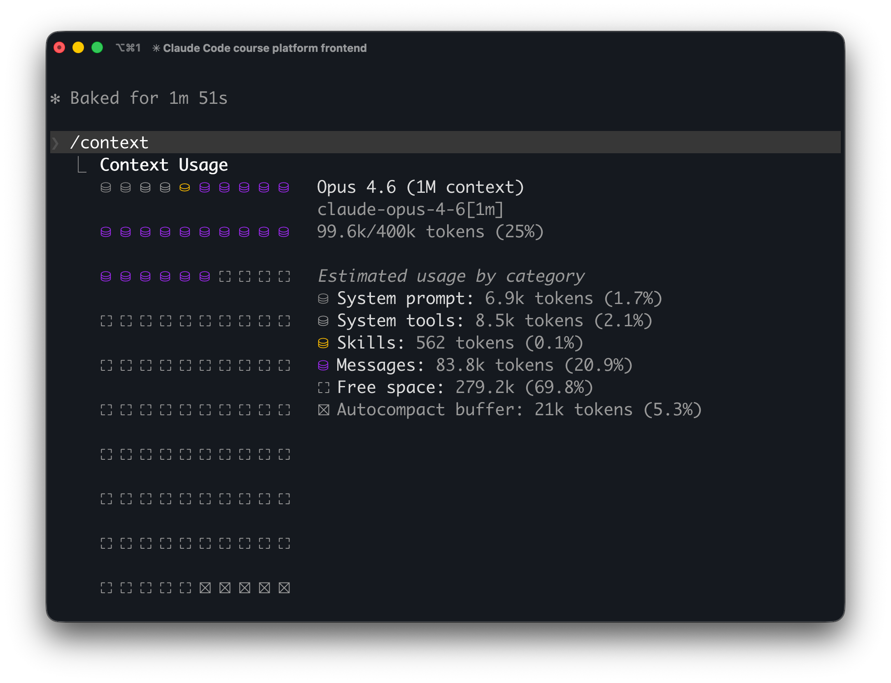

What is compaction?
Every Claude Code session has a finite context window. Modern models like Sonnet 4.6 and Opus 4.6 support up to 1 million tokens of context. As you work, sending messages, reading files, running commands, the conversation grows and available context is consumed. When it approaches the limit, Claude compresses earlier parts of the conversation into a summary. This is compaction.
Compaction works in two steps. First, Claude clears older tool outputs (the raw results of file reads, command executions, and search results). If the conversation is still too large, it then summarizes the remaining history into a condensed form. A [context compacted] indicator appears in your terminal when this happens.
Compaction is lossy. The summary captures the gist but drops specifics. A file path mentioned once in passing, a flag you set early in the session, a nuanced instruction you gave twenty messages ago. Any of these can disappear in a compaction pass. Imagine summarizing a two-hour conversation for a coworker who just walked in. You'd hit the key points but likely skip the small details that may be important. Compaction works the same way.
Compaction in action
Let's step through a visualization of a session to see how context fills, when compaction fires, and what comes out the other side.
Auto-compaction
Auto-compaction triggers when the conversation reaches approximately 95% of context capacity by default. But "capacity" isn't the raw context window because Claude Code reserves a buffer (~20K tokens on a 200K context window) for its own operation. After accounting for system overhead (~20K tokens), MCP tool schemas, and CLAUDE.md files, the usable conversation space before compaction ranges between 100K-140K tokens.
You can monitor this in real time. The /context command shows a detailed token allocation breakdown for your current session. You can also configure your status line to display context usage percentage continuously.

/context command in a live Claude Code session. This session is at 25% capacity accounting for the system prompt, tools, and skills consume a fixed overhead (~16K tokens), messages take 83.8K, and the autocompact buffer reserves 21K tokens. Compaction would trigger when messages fill most of the remaining 279K of free space.Manual compaction
You can trigger compaction manually at any time by typing /compact in Claude Code. This is useful when you've finished a phase of work and want to start fresh without ending the session.
Additionally, /compact accepts a focus argument that tells the summarizer what to prioritize:
# Focus the summary on specific work
/compact focus on the API changes
# Preserve multiple categories of detail
/compact preserve all file paths I modified, current test
failures, and the auth refactoring planFor instructions you want applied to every compaction—manual and automatic—add a dedicated section to your CLAUDE.md file:
# Compact instructions
When you are using compact, please focus on
test output and code changesThis section is loaded from disk after every compaction cycle, so it always persists regardless of how many times the session compacts.
/compact vs /clear
Claude Code has two ways to free up context within a running session, and they work very differently.
/compact summarizes the conversation. You keep a compressed version of what happened including which files were modified, what decisions were made, where you left off. The session continues with that summary as context.
/clear wipes the conversation entirely. No summary, no history. It's a blank slate within the same running process. The aliases /reset and /new do the same thing.
| /compact | /clear | |
|---|---|---|
| Conversation | Summarized | Wiped entirely |
| CLAUDE.md | Reloaded from disk | Reloaded from disk |
| Auto memory | Reloaded from disk | Reloaded from disk |
| Chat-only instructions | May survive in summary | Lost |
| Use case | Continue related work | Start something unrelated |
The key difference: after /compact, Claude knows what you've been working on. After /clear, it doesn't. Both reload static context from disk, so CLAUDE.md and auto memory are always present regardless of which you use.
Use /compact when you're continuing related work and want Claude to retain the thread. Use /clear when you're switching to something completely different and the prior context would just be noise.
What survives compaction?
Not everything is equally vulnerable. Here's the hierarchy:
Always survives - reloaded from disk
System prompt, CLAUDE.md files, .claude/rules/ files, and auto memory (MEMORY.md, first 200 lines or 25KB). These are loaded from disk and as they are never part of the conversation history and compaction cannot touch them.
Preserved in the summary (best-effort)
Current task and immediate context, recently modified file names, recent errors and their solutions, general project architecture, your most recent requests and key code snippets.
Consistently lost or degraded
Instructions from early in the session, intermediate decision rationale, code snippets discussed earlier, subtle style rules, specific file paths and line numbers (generalized to descriptions like "modified auth middleware"), stack traces (summarized or dropped), debugging hypotheses (lose supporting details), and test results (reduced to pass/fail).
If something must persist across a long session, don't rely on having said it once. Put it in a CLAUDE.md file, a rules file, or use auto memory where it becomes static context that is reloaded from disk on every turn.
PreCompact and PostCompact hooks
Claude Code fires a PreCompact hook just before compaction runs. Your hook script receives context via stdin as JSON and can return an additionalContext field that gets injected into the compaction prompt, shaping what the summary preserves.
{
"session_id": "abc123",
"transcript_path": "~/.claude/projects/.../transcript.jsonl",
"cwd": "/Users/you/project",
"hook_event_name": "PreCompact",
"compaction_trigger": "auto"
}The compaction_trigger field is either "manual" or "auto", and you can use the matcher to run different hooks for each. Your hook returns JSON with preservation instructions:
{
"hooks": {
"PreCompact": [
{
"matcher": "auto",
"hooks": [
{
"type": "command",
"command": "echo '{\"hookSpecificOutput\":{\"additionalContext\":\"Preserve all modified file paths with line numbers, current test failures, and the active task plan.\"}}'"
}
]
}
]
}
}A PostCompact hook also fires after compaction completes. It uses the same matcher and input schema. PostCompact is useful for logging, backup, or verification. For example, writing the transcript to an external store before the raw history is dropped.
Configuration
Several environment variables give you control over compaction behavior:
| Variable | Effect |
|---|---|
| DISABLE_AUTO_COMPACT | Disables automatic compaction. Manual /compact still works. |
| DISABLE_COMPACT | Disables all compaction whether automatic and manual. |
| CLAUDE_AUTOCOMPACT_PCT_OVERRIDE | Set the percentage (1–100) at which auto-compaction triggers. Default is ~95%. |
| CLAUDE_CODE_AUTO_COMPACT_WINDOW | Set the token capacity used for auto-compaction calculations, decoupled from the actual model context window. |
In practice, most teams leave auto-compaction enabled and focus their effort on the compact instructions in CLAUDE.md and PreCompact hooks. Disabling compaction entirely means hitting a hard context limit, which is almost always worse than a lossy summary.
Designing for compaction
The best approach to compaction is defensive. Assume it will happen, and structure your workflow so that critical information lives outside the conversation.
Promote recurring instructions to static context. If you find yourself repeating something across sessions, move it to CLAUDE.md or a rules file.
Add a compact instructions section to CLAUDE.md. This lets you permanently control what the summarizer prioritizes without relying on hooks.
Use memory for cross-session persistence. Auto memory saves facts that survive not just compaction but session boundaries entirely.
Compact manually at natural breakpoints. Don't wait for auto-compact to hit mid-task. Run /compact with a focus argument after finishing a task to get a clean summary while the context is coherent.
Monitor with /context. Keep an eye on token usage so compaction doesn't surprise you. Understanding where your tokens go (system overhead, MCP schemas, CLAUDE.md, conversation) helps you optimize.
Restate context after compaction. If you notice Claude lost something, restate it to ensure that it is included in the current session.
Common mistakes
Most compaction problems come from treating the conversation as durable storage.
Giving critical instructions only once, early in a long session.
These are the first to go. If it's important enough to matter 50 messages later, it belongs in CLAUDE.md, a rules file, or auto memory.
Assuming Claude remembers file contents it read 30 messages ago.
Tool output is the first thing cleared during compaction. Claude may remember that it read a file, but not the contents. It can always re-read the file.
Overloading PreCompact with too many preservation rules.
If you tell the summarizer to keep everything, it can't keep anything well. Be selective about what the hook preserves.
Disabling compaction entirely instead of designing around it.
Setting DISABLE_COMPACT means hitting a hard context limit, which is almost always worse than a lossy summary. Work with compaction, not against it.
Summary
Compaction is a consequence of finite context windows. It is also a design constraint you can work with. The tools are layered: compact instructions in CLAUDE.md for permanent summarization guidance, /compact with focus arguments for intentional breakpoints, PreCompact and PostCompact hooks for programmatic control, and environment variables for threshold tuning. Design your workflow so critical information lives in durable locations like CLAUDE.md and treat the conversation as ephemeral.
In the next lesson, we'll look at what happens when context engineering goes wrong and how to trace the root cause.